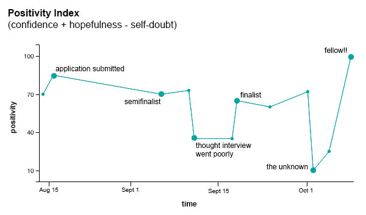

Last August, I was sharing a bottle of wine with the amazing Dr. Carol Zuegner, my friend and former j-school advisor, as we discussed how my newish job was going. I was working as a web developer for a small graphic design studio and was feeling mostly content but somewhat underwhelmed with the work. And Carol, in all her wisdom, reminded me that I have “a very particular set of skills” …
Not those kinds of skills.
…that news organizations are hungrily seeking. She asked if I'd considered applying for opportunities outside of Omaha – perhaps grad school, perhaps something else.
I didn’t put a ton of consideration into the suggestion – I was living quite the comfortable life in Omaha and was hesitant to disrupt it. I had also been working outside the news industry for the last three or four years and wasn't sure if my journalism degree was still relevant.
The next day, Carol sent me an email entitled “cool fellowships at cool places,” containing a link to the Knight-Mozilla fellowship program. It was surprising how perfect it sounded. From a skills and interests perspective, it seemed like a tailor-made opportunity. And, incredibly, it included a reasonable stipend and time commitment.
I had two days to apply.
NBD.
I drafted my responses to the application fairly quickly but spent most of those two days reading blog posts about the fellowship experience. Notable reading material included:
I decided this was actually something I really really really wanted to do.
A few hours before the deadline (not a record, BTW), I hit the submit button and hoped for the best.
The waiting game began. I cycled between ultra-confidence and crippling self-doubt on a near-daily basis as I anticipated a response from OpenNews. When I was feeling level-headed, I estimated I would make it into the group of semifinalists but probably not any further than that. When I made it past that point, I had no more expectations.
The two months leading up to the final fellowship decision felt like this:
 I'm just trying to have fun here.
Here's a timeline of some tweet-sized feels:
Aug. 14
Beginning to read about the fellowship. Very excited.Aug. 16
Application submitted. Feeling super confident because I thought my application materials turned out awesome.Sept. 5
Semifinalist notification. Happy but trying to stay realistic.Sept. 10
Prepping for first interview. Feeling confident; I usually interview pretty well.Sept. 11
Interviewed with OpenNews. Thought it went horribly. Had too much coffee and felt like I couldn’t keep my thoughts straight.Sept. 19
Finalist notification. Very pleasantly surprised. Sept. 25
Interview with CIR. Feeling pretty good about it.Oct. 1
Still feeling good. Blind hope is balancing any lack of confidence. Should receive a final decision tomorrow.Oct. 2
A day full of anxious excitement and anticipation. I am very jumpy.Oct. 3
Received news that a decision hasn’t been made yet. I'm convinced the fellowship was offered to another. Sad. Reevaluating all life decisions.Oct. 6
Received another email. Still no news. At least this isn’t a rejection. I'm still in the running. Feeling slightly better.Oct. 10
Oh happy day! 2015 Knight-Mozilla fellow at the Center for Investigative Reporting. So excite!!
And that's the brief overview of my experience with the fellowship selection process.
One other thing to note – one reason my pre-semifinalist positivity remained high – is that I kept a close eye on the Google Analytics report for my personal website. I received very little traffic prior to applying for the fellowship, and visits to my site were almost entirely from Nebraska. After I applied, I started getting hits from other locations – New York, Chicago, D.C., London – places that definitely had a host news organization or other OpenNews presence. Occassionally, the ISP even said something super informative, like "National Public Radio." So I had a nice quantitative measure that my application likely made it past the first round of cuts, which took some of the edge off.
Gotta love data.